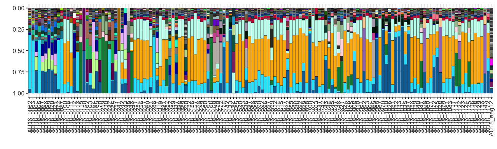
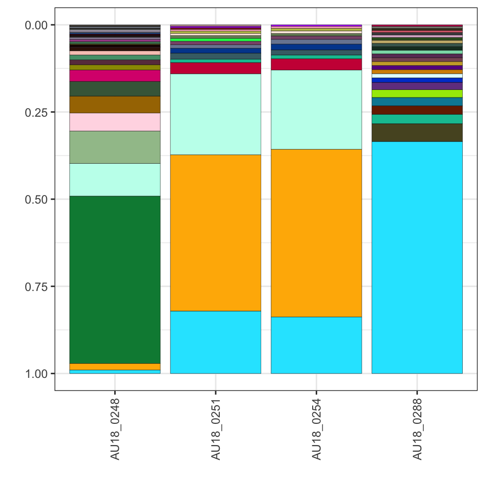
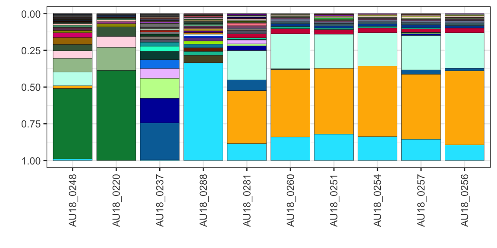
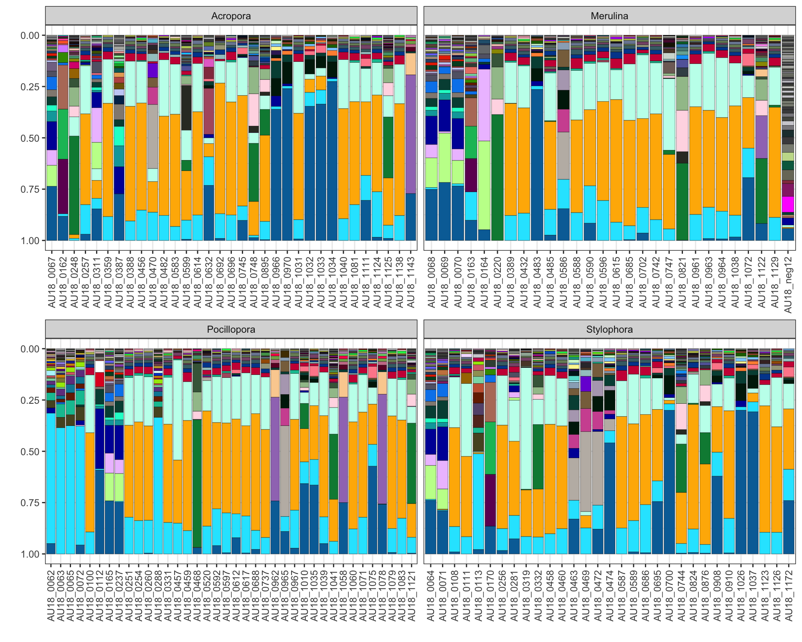

symbioR workflow for symportal output
Example workflow with Symportal output.
Set folder path and seed:
library(tidyverse)
library(symbioR)
set.seed(1)
folder_path <- ("/Users/rof011/symbiodinium/20230120T102936_esampayo")1. extract sequences
see ?extract_seqs for more details. default output is “absolute”, can specify with type = “relative”
sequences <- extract_seqs(folder_path)
head(sequences)## # A tibble: 6 × 3
## # Groups: sample_name [6]
## sample_name seq_ID abundance
## <chr> <chr> <int>
## 1 AU18_1138 C22 10179
## 2 AU18_0483 C1 6466
## 3 AU18_1123 C22 6284
## 4 AU18_0970 C1 5833
## 5 AU18_0251 C22 5420
## 6 AU18_0248 D1 5349Only extract the seq.ID in with matches in the its2.profile
sequences <- extract_seqs(folder_path, onlyprofile=TRUE)
head(sequences)## # A tibble: 6 × 3
## # Groups: sample_name [6]
## sample_name seq_ID abundance
## <chr> <chr> <int>
## 1 AU18_1138 C22 10179
## 2 AU18_0483 C1 6466
## 3 AU18_1123 C22 6284
## 4 AU18_0970 C1 5833
## 5 AU18_0251 C22 5420
## 6 AU18_0248 D1 5349make up some metadata and add it to the file
meta_sim <- data.frame(sample_name = unique(sequences$sample_name),
host_genera = sample(c("Acropora", "Pocillopora", "Stylophora", "Merulina"), length(unique(sequences$sample_name)), replace = TRUE),
location = sample(c("Heron", "Lizard", "Keppel", "Orpheus"), length(unique(sequences$sample_name)), replace = TRUE),
latitude = sampled_numbers <- sample(-10:-30, length(unique(sequences$sample_name)), replace = TRUE))
## under normal use import your metadata from a file and pass it to extract_seqs()
# metasim <- read.csv("file/to/meta.csv")extract sequences with metadata:
sequences <- extract_seqs(folder_path, meta_sim)
head(sequences)## # A tibble: 6 × 6
## # Groups: sample_name [6]
## sample_name seq_ID abundance host_genera location latitude
## <chr> <chr> <int> <chr> <chr> <int>
## 1 AU18_1138 C22 10179 Acropora Lizard -30
## 2 AU18_0483 C1 6466 Merulina Orpheus -30
## 3 AU18_1123 C22 6284 Stylophora Heron -15
## 4 AU18_0970 C1 5833 Acropora Orpheus -27
## 5 AU18_0251 C22 5420 Pocillopora Keppel -25
## 6 AU18_0248 D1 5349 Acropora Keppel -112. filter sequences
a) drop samples by sample_name
sequences <- extract_seqs(folder_path,meta_sim) |>
filter_seqs(drop_samples=c("AU18_0062","AU18_0063","AU18_0064","AU18_0065"))
unique(sequences$sample_name)## [1] "AU18_1138" "AU18_0483" "AU18_1123" "AU18_0970" "AU18_0251" "AU18_0248" "AU18_1126" "AU18_0700" "AU18_0288" "AU18_1078" "AU18_1037" "AU18_0319"
## [13] "AU18_0162" "AU18_1034" "AU18_0583" "AU18_1071" "AU18_1060" "AU18_0468" "AU18_0824" "AU18_0692" "AU18_1026" "AU18_0745" "AU18_1040" "AU18_0388"
## [25] "AU18_1143" "AU18_1075" "AU18_0966" "AU18_0614" "AU18_0962" "AU18_1058" "AU18_1083" "AU18_0359" "AU18_0588" "AU18_0910" "AU18_1032" "AU18_0389"
## [37] "AU18_0587" "AU18_0688" "AU18_0254" "AU18_0520" "AU18_0458" "AU18_1038" "AU18_0747" "AU18_1072" "AU18_0597" "AU18_0961" "AU18_1031" "AU18_0474"
## [49] "AU18_0100" "AU18_1081" "AU18_1122" "AU18_0615" "AU18_1033" "AU18_0589" "AU18_0164" "AU18_0331" "AU18_0612" "AU18_0908" "AU18_0469" "AU18_0165"
## [61] "AU18_0617" "AU18_0963" "AU18_0590" "AU18_1039" "AU18_1121" "AU18_0482" "AU18_0965" "AU18_1079" "AU18_0592" "AU18_0459" "AU18_1125" "AU18_0111"
## [73] "AU18_1172" "AU18_0964" "AU18_1035" "AU18_0695" "AU18_0460" "AU18_0821" "AU18_0072" "AU18_0742" "AU18_0876" "AU18_0472" "AU18_1124" "AU18_0596"
## [85] "AU18_0456" "AU18_0685" "AU18_0257" "AU18_1129" "AU18_0696" "AU18_0686" "AU18_0967" "AU18_0220" "AU18_0463" "AU18_0470" "AU18_0748" "AU18_0702"
## [97] "AU18_1041" "AU18_0599" "AU18_0432" "AU18_0070" "AU18_0069" "AU18_0387" "AU18_1111" "AU18_0895" "AU18_0256" "AU18_0260" "AU18_0311" "AU18_0632"
## [109] "AU18_0281" "AU18_0108" "AU18_0744" "AU18_0112" "AU18_1010" "AU18_0457" "AU18_0068" "AU18_0170" "AU18_0163" "AU18_0737" "AU18_0485" "AU18_0113"
## [121] "AU18_0586" "AU18_0332" "AU18_0067" "AU18_0237" "AU18_1128" "AU18_0232" "AU18_0071" "AU18_0234" "AU18_0352" "AU18_0242" "AU18_0115" "AU18_0390"
## [133] "AU18_0219" "AU18_neg12" "AU18_0087" "AU18_0743" "AU18_0243" "AU18_0703" "AU18_0245" "AU18_0484" "AU18_0241" "AU18_0150"or if you already have a list:
remove_these_seqs <- c("AU18_0062","AU18_0063","AU18_0064","AU18_0065")
sequences <- extract_seqs(folder_path,meta_sim) |>
filter_seqs(drop_samples=remove_these_seqs)b) keep samples by sample_name
sequences <- extract_seqs(folder_path, meta_sim) |>
filter_seqs(keep_samples=c("AU18_0062","AU18_0063","AU18_0064","AU18_0065"))
unique(sequences$sample_name)## [1] "AU18_0062" "AU18_0063" "AU18_0065" "AU18_0064"c) drop samples by seq.ID
Note partial matching doesn’t work with seq.ID - e.g. selecting “C3” would remove “C3eq” etc.
sequences <- extract_seqs(folder_path) |>
filter_seqs(drop_seqs=c("C3xe","C3xe","C1","C3ih"))
unique(sequences$seq_ID)## [1] "C22" "D1" "C3" "C22ad" "C50b" "C3xf" "D1ej" "C42.2" "D6" "D4" "C3co" "C3n" "D1d" "14636_C"
## [15] "C22ah" "C3bm" "C22ai" "1055322_C" "1646063_C" "C50f" "C50cg" "1645787_C" "2785985_C" "2778029_C" "107479_C" "1645568_C" "25757_D" "C21"
## [29] "1611788_C" "1147954_C" "1148411_C" "2286672_C" "2784604_C" "262320_C" "C3be" "37253_C" "22134_C" "1630681_C" "90777_C" "D4k" "D2.2" "1680592_C"
## [43] "D6c" "1646070_C" "47106_C" "D10" "C3.2" "278761_C" "766366_C" "1612485_C" "C3an" "2426_C" "19548_C" "40627_C" "C3vb" "1026568_C"
## [57] "1073761_C" "2885788_C" "44745_C" "1398203_C" "C72k" "1669316_C" "C3.12" "C45k" "C3hi" "D4ae" "1626827_C" "2853_C" "1626350_C" "1670421_C"
## [71] "1670723_C" "C3wo" "123623_C" "C3xd" "172931_D" "1630543_C" "1645678_C" "2885790_C" "C79" "1698762_C" "1670629_C" "2783498_C" "D1af" "1612135_C"
## [85] "1673_D" "C3ju" "54400_C" "2885732_C" "1618884_C" "90920_C" "D1id" "32528_D" "2885738_C" "1648847_C" "D2" "1031429_C" "C3od" "92898_C"
## [99] "54364_C" "1630588_C" "1114496_C" "1662001_C" "D2a" "2885739_C" "1714311_C" "281318_D" "4063_C" "2595310_C" "C6a" "2783481_C" "C3bf" "9945_C"
## [113] "2885807_C" "D17d" "42222_C" "1491900_C" "333087_C" "24192_C" "414389_C" "7488_D" "75670_C" "C8" "C3mk" "24569_C" "D6g" "47105_C"
## [127] "1622915_C" "2885804_C" "20466_C" "253897_D" "1677_D" "D1b" "93899_C" "1611789_C" "6379_C" "2885799_C" "1669691_C" "2885757_C" "150940_C" "2780845_C"
## [141] "C42ay" "1626763_C" "C42ao" "23580_C" "1692949_C" "223603_D" "C9a" "C54l" "1708730_C" "1029753_C" "29115_C" "141145_D" "21810_C" "2885773_C"
## [155] "C3ag" "1194550_C" "1714620_C" "17682_D" "2885760_D" "2783362_C" "772549_D" "2786619_C" "C3dw" "25889_C" "C8a" "27913_C" "1630842_C" "21507_C"
## [169] "25566_D" "1645716_C" "C39ab" "C3ed" "13723_C" "2174376_C" "1670084_C" "1626916_C" "2885771_C" "2784993_C" "2091_C" "2783544_C" "2175598_D" "94627_C"
## [183] "1707858_C" "C3lk" "D2c" "2885806_C" "39266_C" "2885762_C" "91281_C" "2783442_C" "2282565_C" "965969_C" "2885805_C" "C3ab" "222919_D" "1626302_C"
## [197] "2885801_D" "C50a" "266584_C" "C42au" "1637611_C" "2885743_D" "C50v" "57565_C" "C78c" "132798_D" "66904_C" "918687_C" "2885735_C" "3289_C"
## [211] "21067_C" "C3ac" "C3.10" "1655376_C" "22284_C" "281_C" "2885752_C" "2885791_D" "1655375_C" "C3tq" "2885742_C" "17505_C" "C3da" "103346_C"
## [225] "1670160_C" "11027_D" "2885777_C" "1183302_C" "1638047_C" "21025_C" "2850_C" "2885733_C" "C41z" "1645877_C" "460098_D" "147220_C" "25715_C" "C3sa"
## [239] "2623441_C" "D17al" "2885756_C" "2885736_C" "22281_C" "22136_C" "C3ew" "159911_C" "2885753_C" "D17j" "2885797_C" "42703_C" "2885758_C" "1670426_C"
## [253] "2783359_C" "2885802_D" "D17e" "92851_C" "38496_C" "2282558_C" "23615_D" "2885774_C" "1314109_C" "C3si" "1630513_C" "1630350_C" "1618671_C" "2885786_C"
## [267] "2885744_C" "C50aq" "1328437_C" "170670_C" "2885741_C" "1351_C" "2885792_C" "2282571_C" "1428436_C" "2885734_C" "2885754_C" "1658901_C" "C50t" "C50ar"
## [281] "268040_C" "C3dr" "2885745_C" "1163651_C" "181666_D" "948418_C" "20946_C" "2885755_C" "2885780_C" "2885800_C" "D1r" "C3cl" "C3sk" "C3wf"
## [295] "95341_C" "2885793_C" "1150766_C" "1962377_C" "C3ax" "13356_D" "2282560_C" "100944_C" "1062929_C" "1613357_C" "2885746_C" "2885787_C" "135129_C" "2175400_C"
## [309] "53111_D" "1401978_C" "2885759_C" "69388_C" "10616_D" "2885766_C" "57566_C" "C3ub" "2885768_C" "90635_C" "48654_C" "1242406_D" "1653201_C" "10179_D"
## [323] "2885770_C" "2239310_C" "2885748_C" "1645825_C" "47056_C" "2175409_C" "C35.3" "2175451_C" "93790_C" "42219_C" "1642017_C" "D2j" "46331_C" "D1dm"
## [337] "42216_C" "1670755_C" "1170996_D" "6624_D" "D1ih" "1634089_C" "C78" "1630270_C" "2239316_C" "D17c" "2885747_C" "C3t" "2282561_C" "2885798_C"
## [351] "C40ap" "2885795_C" "2885803_C" "2885789_C" "C42e" "870372_C" "2779405_C" "1770278_C" "D17l" "28248_D" "104830_D" "2184426_D" "2043_C" "103687_C"
## [365] "2239314_C" "33296_C" "1670517_C" "2885761_D" "D1u" "1675094_C" "7279_D" "10626_D" "2885772_C" "C42bw" "2779481_C" "C79a" "C75h" "2239404_C"
## [379] "2885794_C" "C79b" "2783357_C" "208_C" "1669953_C" "102838_D" "C3gk" "2239838_C" "2239747_C" "19245_D" "2885740_C" "2885749_C" "22178_C" "392267_C"
## [393] "1645719_C" "2885769_C" "D1ja" "502804_C" "C42ae" "C8e" "G3ai" "2885779_G" "93186_C" "1658362_C" "1670248_C" "1163943_C" "93539_C" "255526_C"
## [407] "1645836_C" "C3tv" "909_D" "1633580_C" "C35.1" "2175412_C" "21721_C" "7528_C" "2885781_C" "2239488_C" "73441_G" "2786470_C" "24193_C" "C42a"
## [421] "C42ea" "2885782_C" "2239592_C" "2230021_C" "2783458_C" "1670177_C" "2885796_C" "214657_D" "145593_D" "1084218_C" "2885765_C" "2239344_C" "2230005_C" "1766700_C"
## [435] "C8n" "99803_C" "870396_C" "756079_C" "463034_C" "2885763_C" "15923_C" "G3a" "C54b" "1685230_C" "91418_C" "2885767_C" "2783601_C" "1624473_C"
## [449] "764365_D" "1628745_C" "4695_C" "C54m" "870369_C" "8017_C" "791026_C" "2885783_C" "2315062_C" "2175452_C" "2175407_C" "1714031_C" "1703694_C" "2885764_C"
## [463] "1712853_C" "A1" "25651_D" "1631480_C" "962494_C" "2885751_C" "2885750_C" "2785003_C" "2885778_C" "2885776_C" "2885775_C" "2885737_C" "2885785_D" "2885784_D"
## [477] "40982_D" "2786412_C" "65155_C" "C3eq" "2778862_C" "2778250_C" "2778140_C" "2777950_C" "141464_C" "C42dr" "722736_C"d) keep samples by seq.ID
sequences <- extract_seqs(folder_path) |>
filter_seqs(keep_seqs=c("C3", "C3xe","C3xe","C1","C3ih"))e) remove seq.ID below a threshold
sequences <- extract_seqs(folder_path) |>
filter_seqs(threshold=10000)f) filter by clade
select genus/clade to keep:
sequences <- extract_seqs(folder_path) |>
filter_seqs(clade="D")g) filter by metadata
if you include metadata in extract_seqs, you can use any tidyverse filter() action. for example:
sequences <- extract_seqs(folder=folder_path, metadata=meta_sim) %>%
filter(host_genera=="Pocillopora") %>%
filter(location=="Den Haag") %>%
filter(latitude < -25)combining filters
sequences <- extract_seqs(folder_path) |>
filter_seqs(drop_samples=c("AU18_0062","AU18_0063","AU18_0064","AU18_0065"),
keep_seqs=c("C3", "C3xe","C1","C3ih"),
threshold=10000)or:
sequences <- extract_seqs(folder_path, type="absolute") |>
filter_seqs(drop_samples=c("AU18_0062","AU18_0063","AU18_0064","AU18_0065")) |>
filter_seqs(keep_seqs=c("C3", "C3xe","C1","C3ih")) 3. Quality control:
a) compare sample lists
explore which samples are dropped:
all_samples <- extract_seqs(folder_path)
subset_samples <- extract_seqs(folder_path) |>
filter_seqs(drop_samples=c("AU18_0062","AU18_0063","AU18_0064","AU18_0065"))
compare_seqs(all_samples, subset_samples)## [1] "C3ag" "13723_C" "C3ab" "2885777_C" "2885797_C" "100944_C" "1401978_C" "C3ub" "2885772_C" "392267_C" "93539_C" "255526_C" "C3tv" "2885778_C"
## [15] "2885776_C" "2885775_C"a) compare seq lists
explore which seqs are filtered:
all_seqs <- extract_seqs(folder_path)
subset_seqs <- extract_seqs(folder_path, type="absolute") |>
filter_seqs(threshold=5, type="relative")
compare_seqs(all_seqs, subset_seqs)## character(0)Note: extract_seqs() can extract data either absolute abundance or relative abundance. Similarly, filter_seqs() can output the format either in absolute abundance or relative abundance (the default is type=“relative”).
If you pass relative abundance data from extract_seqs() and try to filter by threshold tidyseqs will fail the following error message:
# extract_seqs(folder_path, type="relative") |>
# filter_seqs(threshold=5, type="absolute")4. Visualise sequences
a) filter and plot
Plot the raw data (note - this has to be in a pipe as plot_seqs needs the folder from extract_seqs to get the colors)
plot_data <- extract_seqs(folder=folder_path, type="relative") %>%
plot_seqs(folder=folder_path, type="ggplot")
plot_data
Add filter_seqs before the plot to select what to view:
plot_data <- extract_seqs(folder_path) %>%
filter_seqs(threshold = 5000) %>%
filter_seqs(keep_samples = "AU18_02") %>%
plot_seqs(folder_path, type="ggplot")
plot_data ### b) order output by cluster
cluster samples by either “bray-curtis”, “euclidean”, “jaccard”, “hellinger”, save using ggsave
plot_data <- extract_seqs(folder_path, meta_sim) |>
filter_seqs(threshold = 1000) |>
filter_seqs(keep_samples = "AU18_02") |>
plot_seqs(folder_path, type="ggplot", cluster="hellinger")
plot_data
c) facet panels
Add facet_wrap or facet_grid by using standard ggplot code:
plot_data <- extract_seqs(folder_path, meta_sim) |>
filter_seqs(threshold = 1000) |>
plot_seqs(folder_path, type="ggplot", facet="host_genera")
plot_data
d) order output by cluster
plot with plotly instead of ggplot for dynamic plots:
plot_data <- extract_seqs(folder_path, meta_sim) |>
filter_seqs(threshold = 2000) |>
plot_seqs(folder_path, type="plotly", cluster="hellinger", facet="location")
plot_datae) split datasets by row:
To avoid wide plots, split large datasets using nrow:
plot_data <- extract_seqs(folder_path, meta_sim) %>%
filter_seqs(threshold = 2000) %>%
plot_seqs(folder_path, type="plotly", cluster="hellinger", nrow=4)
plot_data